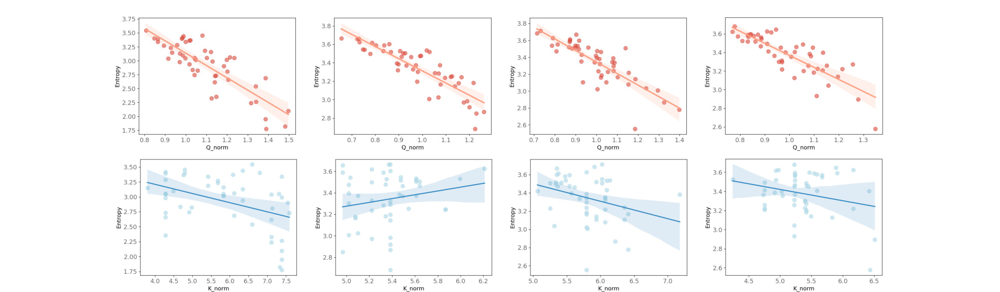
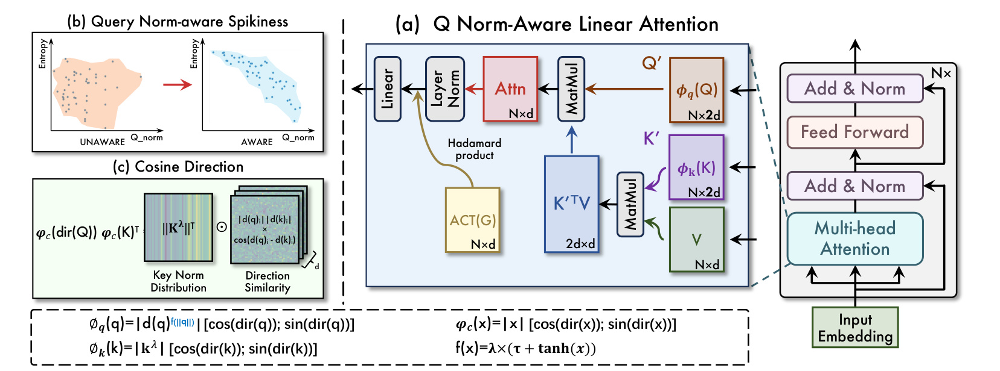
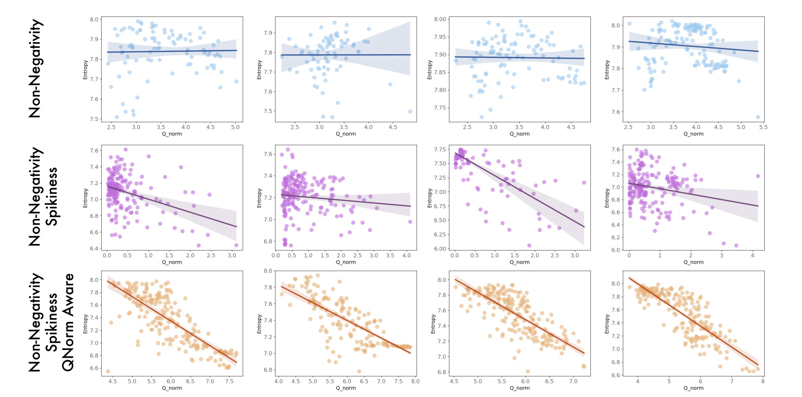
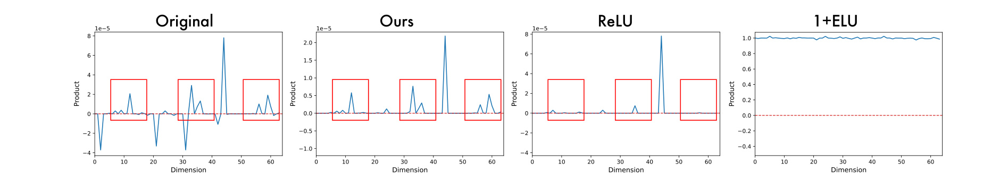
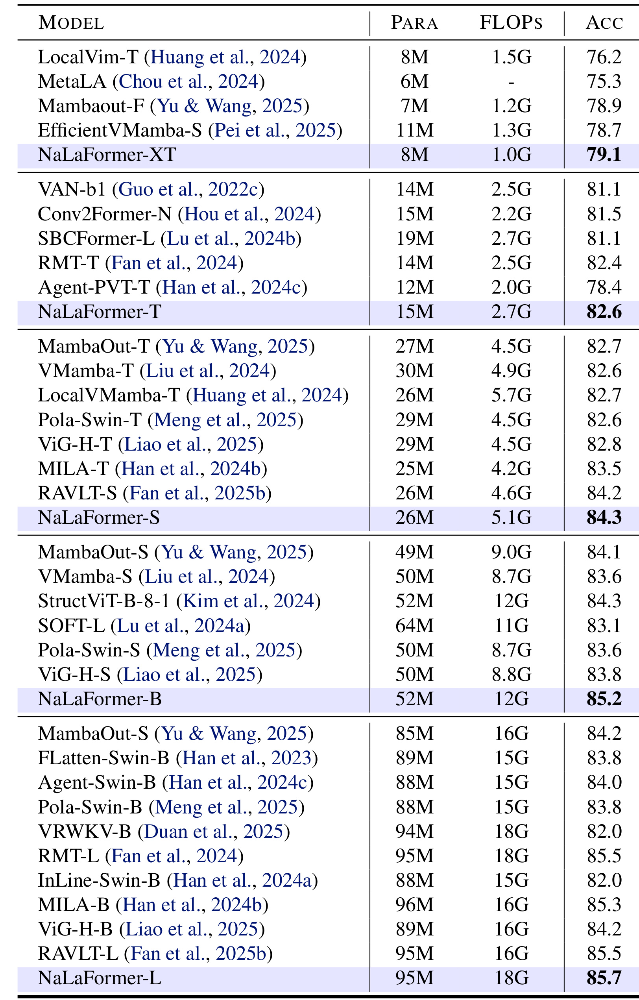
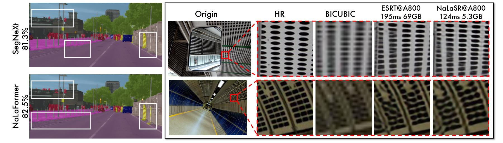
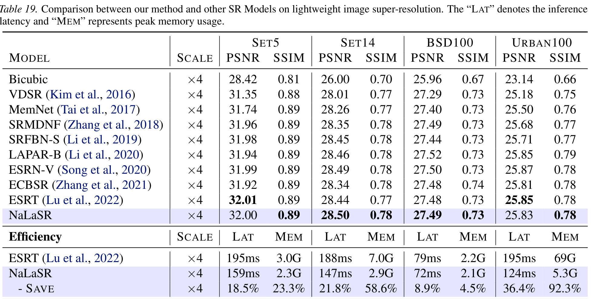
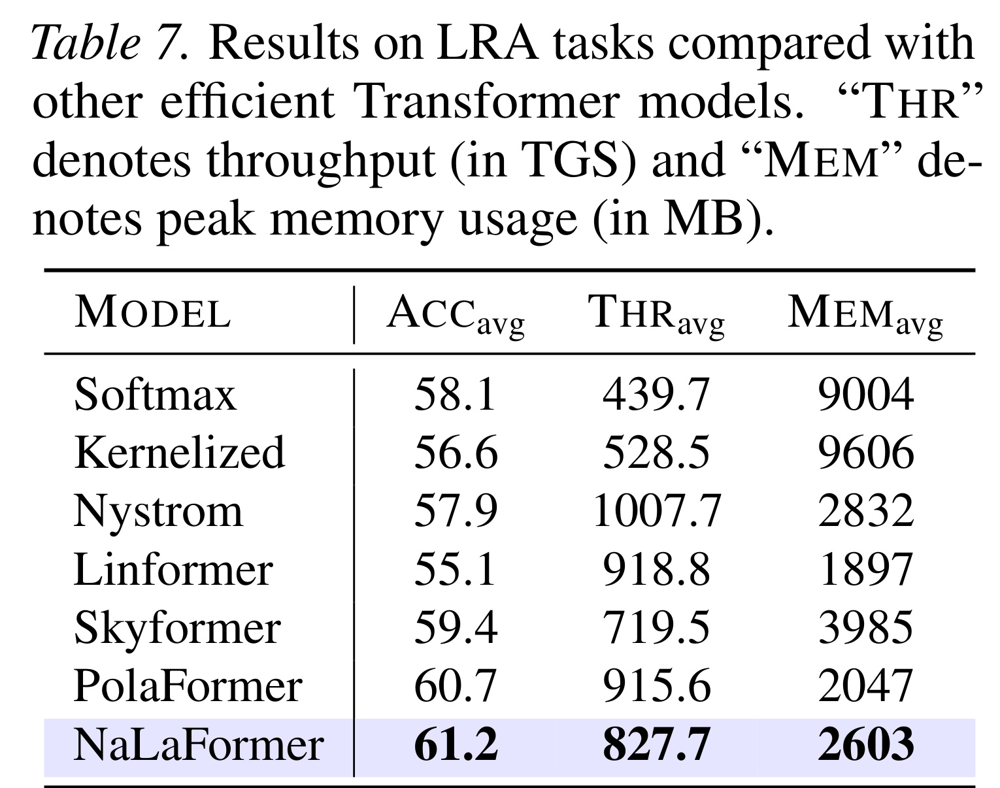

这篇 Norm×Direction: Restoring the Missing Query Norm in Vision Linear Attention 来自哈尔滨工业大学（深圳）一作团队，合作机构包括鹏城实验室和昆士兰大学，论文当前 arXiv v3 修订于 2026-05-25，并以 ICML 2026 论文形式出现。它提出 NaLaFormer，把线性注意力中长期被当作“归一化细节”的 query norm 重新放回注意力核设计，同时用 cosine direction 处理非负约束下的符号信息损失。arXiv 页面说明代码可用，但本轮没有核验到独立公开项目页；阅读重点放在它如何解释线性注意力的熵退化、怎样把 norm 与 direction 拆开使用，以及这些机制在分类、检测、分割、超分、扩散、语言和 LRA 上是否形成一致证据。
1. 背景和问题
1.1 线性注意力的效率收益和表达力缺口
标准 self-attention 的核心是用 softmax 归一化 query-key 点积，令每个 query 在所有 key 上形成一个概率分布。对于长度为 $N$、单头维度为 $d$ 的序列，softmax attention 的主要计算和显存瓶颈来自 $QK^\top$，复杂度随 $N^2$ 增长。视觉任务里这个问题尤其尖锐：高分辨率分割、检测、扩散生成和超分辨率都会把图像切成大量 token，论文中超分辨率场景达到 $70K+$ tokens，原生 softmax attention 很容易直接成为显存和延迟瓶颈。
线性注意力的基本想法是用可分离核函数 $\phi(\cdot)$ 替代 $\exp(\cdot)$，把
改写成可交换乘法顺序的形式：先累计 $\sum_i \phi(k_i)^\top v_i$ 和 $\sum_j \phi(k_j)^\top$，再与 $\phi(q_t)$ 相乘。这样避免显式构造 $N\times N$ 注意力矩阵，理论上把序列长度维度上的代价降到线性。问题是，多数线性注意力变体在视觉 backbone 中仍然比 softmax 或强卷积/SSM/混合模型弱，常见症状是注意力分布过平滑、重要 token 聚焦能力不足、细粒度相似性被核函数抹掉。
已有工作通常从两个方向补救。第一类强调非负性，因为归一化后的注意力权重需要像概率分布一样可解释，于是使用 ReLU、$1+\mathrm{ELU}$、SiLU 或随机正特征映射。第二类强调 spikiness，即让分布更尖锐，例如 FLatten 和 PolaFormer 用幂函数或 polarity-aware 设计强化 token 差异。这些方法能提升指标，但论文认为它们没有真正解释“为什么线性注意力会丢尖锐性”：它们调的是核函数形状，却没有恢复 softmax 中 query norm 对熵的动态控制。
1.2 缺失的不是一个常数，而是 query 侧温度
论文的关键观察是：在 softmax attention 中，query 的模长不是无关缩放，而是在指数函数内部充当动态 temperature。把 query 和 key 做 Norm × Direction 分解，设 $\mathrm{dir}(x)=x/\|x\|$，softmax 的单 query 输出可以写成：
在这个式子里，$\|q_t\|$ 同时放大所有 logit，但 softmax 不会简单抵消它。若 direction 排序已经产生偏好，较大的 $\|q_t\|$ 会让高分 key 与低分 key 的指数差异扩大，注意力分布熵下降，输出更集中；较小的 $\|q_t\|$ 则让分布更平滑。因此 query norm 可以理解为每个 query 自己携带的“需要多尖锐”的信号。
符号解释：$q_t$ 是第 $t$ 个 query，$k_i$ 与 $v_i$ 是第 $i$ 个 key/value，$N$ 是 token 数，$d$ 是单头维度，$\|q_t\|$ 与 $\|k_i\|$ 分别表示模长，$\mathrm{dir}(\cdot)$ 表示单位方向，$\langle\cdot,\cdot\rangle$ 是方向相似度。这个解释强调，softmax 的指数并不是只看角度；它还让 query 的模长参与温度控制。

Figure 1 是整篇论文的出发点。作者在 Swin Transformer 的 ImageNet 样本上画出 feature entropy 与 vector norm 的关系，上排展示 q-norm 与 attention entropy 的强负相关，下排展示 k-norm 没有一致关系。这个图的价值不是说“norm 越大越好”，而是说明 softmax attention 已经学会用 query 侧模长表达选择性：某些 query 需要非常确定地看少数 token，另一些 query 可以保持更宽的上下文混合。线性注意力如果在归一化中把 $\|\phi(q_t)\|$ 消掉，相当于把这条自适应温度通道切断，只剩 direction 和 key 侧 norm 在起作用。
1.3 非负约束还会破坏负值交互
线性注意力为了避免负权重，经常把 query/key 特征逐元素变正。这个做法看似只是在满足概率约束，实际会破坏内积的细粒度结构。假设某个维度上 $q_i$ 和 $k_i$ 同号，乘积为正；异号时乘积为负，代表方向相反或抑制关系。ReLU 会直接丢掉负值维度，$1+\mathrm{ELU}$ 会把符号差异压成正值偏置，最后内积不再反映原始方向关系。于是线性注意力同时遇到两个问题：query norm 作为动态温度被归一化抵消，负值交互作为 direction 信息被非负激活抹平。
NaLaFormer 的题目 “Norm × Direction” 正是把这两个问题拆开：norm 负责控制注意力分布的尖锐程度，direction 负责保留语义方向和逐维交互；二者不应该被同一个逐元素正激活粗暴处理。这个切分很适合视觉线性注意力，因为视觉 token 既需要长程上下文，也需要边缘、纹理、类别、位置等局部或语义方向的细差别。如果只追求线性复杂度而牺牲分布可控性，模型在高分辨率任务中虽然省显存，却会在精度上把节省的代价还回来。
2. 方法
2.1 NaLaFormer 的总体结构
NaLaFormer 不是重新设计整套 Transformer，而是替换 attention block 中的 feature map 和相似性计算。论文沿用 gated linear attention 风格的块：输入 token 先投影得到 $Q,K,V$，经过自定义的 $\phi_q(Q)$ 与 $\phi_k(K)$ 做线性注意力，输出再经过 LayerNorm，并与由输入生成、经 SiLU 激活的 gate $G$ 做逐元素调制，最后用线性层融合多头信息。这个结构让方法可以插入视觉 backbone，也方便与已有 Triton/FLA 类线性注意力实现结合。

Figure 2 把方法拆成三块。右侧的 block 图说明 NaLaFormer 仍然是“投影 QKV → 线性注意力 → 归一化 → gate → 线性输出”的常规模块，不是额外堆一个重型分支。左上角的 query-norm-aware spikiness 展示本文第一项修正：标准线性注意力里 q-norm 与 entropy 的关系是 unaware，NaLaFormer 把 q-norm 注入 feature map 后恢复 aware。左下角的 cosine direction 展示第二项修正：不再用 ReLU 或 $1+\mathrm{ELU}$ 直接裁剪符号，而是把 direction 分量映射到 cos/sin 结构，使最终相似度非负，同时保留维度间“方向接近或相反”的信息。
2.2 Norm × Direction 分解如何暴露 query norm cancellation
论文先定义任意非零向量 $x=(x_1,\ldots,x_d)\in\mathbb{R}^d$ 的 ND 分解：
在有限维空间里不同 $p$-norm 等价，论文后续不强调具体 $p$ 的选择，而强调“模长”和“方向”承担不同语义。模长表示该向量的重要性或置信强度，方向表示语义朝向。softmax attention 同时使用二者：$\|q_t\|$ 影响分布温度，$\|k_i\|$ 和 $\langle\mathrm{dir}(q_t),\mathrm{dir}(k_i)\rangle$ 共同决定每个 key 的相对分数。
线性注意力的归一化形式则是：
把 $\phi(q_t)$ 和 $\phi(k_i)$ 再做 ND 分解，会得到论文 Eq. (1)/(4) 的关键结论：
分子分母都有同一个 $\|\phi(q_t)\|$，归一化后被抵消。注意这里抵消的不是“整体缩放不影响输出”这么简单，而是抵消掉了 softmax 中本来可以控制 entropy 的 query 侧变量。key norm 仍然留在求和项里，所以线性注意力变成 key-norm-aware 但 query-norm-unaware。对视觉任务而言，这会让每个 query 缺少“我现在应该聚焦还是泛化”的自适应选择，最终表现为分布更平、边界和局部结构不够锐利。
2.3 Query-norm-aware feature map：把尖锐性控制放回 query
为恢复 query norm 的作用，论文设计的 query/key feature map 是非对称的。核心形式写成：
论文正文排版中也用 $\phi_q(q)=\mathrm{dir}(q)f(\|q\|)$ 表达“direction 由 norm-aware power 调制”的直觉；结合 Figure 2 与后续公式，更准确的工程含义是对 query direction 做 norm-dependent sharpening。动态指数函数为：
其中 $\lambda$ 和 $\tau$ 控制指数范围，保证指数大于 1，同时避免数值溢出。直觉上，$\tanh(\|q\|)$ 把 query norm 压到有界范围，再通过 $\lambda,\tau$ 映射成幂指数。大的 query norm 产生更强 power sharpening，注意力分布更尖；小的 query norm 则少做锐化，保留更平滑的上下文混合。

Figure 3 对这一点给了直接可视化。只保留非负性的 $1+\mathrm{ELU}$ 会让 entropy 较高且与 q-norm 缺少清晰关系；ReLU 加 power 的 FLatten 路线可以降低 entropy，但仍不能稳定恢复 softmax 中“q-norm 越大、entropy 越低”的关系；NaLaFormer 把 q-norm 写入 power 后，散点重新形成明显负相关。这个图说明它不是简单让所有注意力都更尖，而是让“尖不尖”重新由每个 query 自己决定。
这也是本文区别于已有 spiky linear attention 的地方。只用固定 power 函数时，所有 query 共享同一锐化强度；这能降低平均 entropy，却不能表达不同 query 的不确定性差异。NaLaFormer 的 $f(\|q\|)$ 更像 softmax temperature 的 query-wise 版本：它承认某些 query 的 direction 已经足够明确，应该放大差异；也承认某些 query 本身模长较小，过度 sharpen 反而会制造伪确定性。这个机制对 dense prediction 很关键，因为背景区域、边缘区域、纹理重复区域和目标中心区域本来就不该用同一选择性。
从实现角度看，这个非对称设计还隐含了一个重要选择：query 和 key 不再共享完全相同的 feature map。传统 kernel attention 往往默认 $\phi_q=\phi_k$，这样便于理解为同一核空间中的内积；NaLaFormer 则承认 softmax 本来就是非对称地使用 query norm 和 key norm。query 侧更像“读出控制器”，决定本次聚合要多尖锐；key 侧更像“可被检索的记忆槽”，提供 magnitude 和 direction 供所有 query 复用。因此 $\phi_q$ 需要随 $\|q\|$ 动态改变 exponent，而 $\phi_k$ 可以保持固定 $\lambda$ 的 norm-scaled 映射。这种非对称性是论文方法的核心，不应在复现时为了代码简洁强行改成共享映射。
符号解释：$\phi_q$ 和 $\phi_k$ 分别是 query/key 的线性注意力特征映射，$\lambda$ 控制基础幂指数，$\tau$ 控制指数偏移，$\tanh(x)$ 负责把 norm 影响限制在有界区间。$f(\|q\|)$ 越大，query direction 的分量差异越被放大，归一化后分布越接近低熵尖峰；$f(\|q\|)$ 越小，聚合越接近平滑上下文平均。
2.4 Cosine direction：在非负性和符号信息之间折中
第二个模块解决非负约束。论文指出，直接 ReLU 或 $1+\mathrm{ELU}$ 会让 $q_i k_i<0$ 的维度交互消失或被偏置化。NaLaFormer 改为先取 direction，再把每个标量 direction component 映射成二维 cos/sin 向量：
对应的逐维内积变成：
这里的关键是把符号差异转成角度差异。若两个维度方向接近，$\cos(\Delta)$ 接近 1，贡献被保留；若方向相反，贡献被抑制但不是粗暴裁零。为了保证最终非负，论文把 direction component 通过 $\tanh(x/\|x\|)\times\pi/4$ 缩放到 $[-\pi/4,\pi/4]$，于是差值落在 $[-\pi/2,\pi/2]$，cosine 非负。由于 $\cos^2(x)+\sin^2(x)=1$，这个变换还保持 direction 向量的模长稳定。

Figure 4 很直观地展示了为什么这不是一个纯数学装饰。原始 $q_i k_i$ 中有多个尖峰结构，代表某些维度对相似度有强贡献。ReLU 会丢掉大量负值相关的信息，$1+\mathrm{ELU}$ 会使贡献更平，区分度下降；NaLaFormer 的 cosine-based 方法在保证非负的同时，仍保留接近原始内积的峰形。这对视觉 token 尤其重要，因为图像特征常常通过正负响应共同表达边缘、纹理和类别方向，单纯裁掉负维度会让表征更像“只有存在性、没有方向性”。更细地看，cosine direction 并不是恢复原始负内积，而是把“相反方向”转译成较小的非负相似度；它保留的是抑制关系的强弱排序，而不是允许负权重参与概率归一化。这个折中很适合线性注意力：既满足 kernel attention 对非负分母的需求，又避免把异号维度全部视作无信息。
2.5 统一输出公式和 gated block
把 norm-aware query map 与 cosine direction 合并后，NaLaFormer 使用拼接的 cos/sin feature map：
其中：
先预聚合 key-value 统计量：
以及归一化分母：
最终输出为：
这个式子保留了线性注意力的核心优势：$S_{\cos},S_{\sin},Z_{\cos},Z_{\sin}$ 可以在序列维度上线性累计，不需要 $N^2$ attention map。额外成本主要来自 cos/sin 拼接导致的通道扩展和幂函数/三角函数 feature map，但它们发生在 token-feature 层面，不改变序列长度上的复杂度阶数。论文在实现讨论中还指出，方法本质上是矩阵乘法友好的 feature map，可直接利用 bidirectional linear attention 的 Triton 实现，且由于没有复杂稀疏控制流，对量化也比较友好。
符号解释：$S_{\cos}$ 和 $S_{\sin}$ 是 key-value 侧预聚合矩阵，$Z_{\cos}$ 和 $Z_{\sin}$ 是对应分母统计量，$\phi_q^{\cos}$、$\phi_q^{\sin}$ 是 query 侧的两个投影分量，$\odot G$ 表示用 gate $G$ 做逐元素调制。这个输出公式还说明 NaLaFormer 没有破坏线性注意力的 associative computation：所有与 $N$ 个 key/value 相关的量都可以先汇总，再服务每一个 query；query 侧只需要用自身 feature map 读取这些汇总统计。也因此，方法适合 bidirectional vision attention，而不仅是 causal 语言建模。
2.6 理论分析给出的边界含义
附录从 probability sequence entropy 角度解释：softmax 中 query norm 进入指数函数后，可以单调影响分布熵；而许多线性 feature map 满足 $c_1\phi(q)\le\phi(cq)\le c_2\phi(q)$，query 缩放只让熵在由 $c_1,c_2$ 控制的范围内波动，不会自然形成随 $\|q\|$ 增大而熵降低的负相关。论文推导了类似下面的界：
这个界的工程含义是：如果 feature map 的曲率不随 query norm 改变，query norm 很难直接控制 entropy；只有让 steepness 或 exponent 与 $\|q\|$ 绑定，线性注意力才可能模仿 softmax 的温度行为。NaLaFormer 的 $f(\|q\|)$ 正是在这个位置补上缺口。不过这也提示一个风险：norm-aware power 的数值范围必须受控，否则大 norm query 可能造成过强 sharpen 或训练不稳定。论文通过 $\tanh$、$\lambda$、$\tau$ 限幅，并在 QK-Norm 对比和超参数消融中验证它不是简单放大 norm。
3. 实验结果
3.1 实验覆盖范围
论文的实验设计很宽，目标是证明 NaLaFormer 不只是 ImageNet 上的小技巧，而是一种可迁移的线性注意力 feature map。视觉侧包括 ImageNet-1K 分类、COCO 检测和实例分割、ADE20K/Cityscapes 语义分割、DIV2K 训练的单图超分辨率，以及把注意力替换进 DiT/SiT 的扩散生成。语言和长序列侧包括 340M 参数语言模型从零预训练后的常识推理任务，以及 Long Range Arena。这个覆盖面使结论更有说服力，但也意味着不同任务的训练配方、backbone 和 baseline 并不完全同质，因此读实验时应区分“机制消融”和“跨任务应用结果”。
3.2 ImageNet-1K：同等量级下提升明显

Table 1 展示 NaLaFormer 在多个模型大小上与 CNN、SSM、Transformer 和线性注意力模型比较。小模型 NaLaFormer-XT 只有 8M 参数、1.0G FLOPs，却达到 79.1% Top-1，高于 LocalVim-T、MetaLA、MambaOut-F 和 EfficientVMamba-S 等同量级模型。NaLaFormer-T 为 15M 参数、2.7G FLOPs，Top-1 达到 82.6%，高于 Agent-PVT-T 的 78.4%，也与更大 FLOPs 的若干视觉模型竞争。NaLaFormer-S 为 26M 参数、5.1G FLOPs，达到 84.3%，略高于 RAVLT-S 的 84.2%。NaLaFormer-B 和 L 在更大规模上继续提升，附录全表给出 NaLaFormer-L 约 95M 参数、18G FLOPs、85.7% Top-1。
论文特别强调 NaLaFormer-T 相比同 FLOPs 线性 baseline 有 3.8% 到 7.5% 的准确率提升。这个数字需要按 baseline 量级理解：它不是对所有 SOTA 视觉模型都提升 7.5%，而是对可比线性注意力或弱 baseline 的提升范围。更稳妥的结论是，NaLaFormer 至少没有出现线性注意力常见的“省计算但掉精度”问题，在多个参数/FLOPs 档位能站到当前高效视觉 backbone 的前沿区间。考虑到方法主要改 attention feature map，这个结果支持“query norm + cosine direction”确实改善了表达力，而不仅是训练技巧带来的偶然增益。
3.3 检测、分割和扩散：密集任务验证边界质量
COCO Mask R-CNN 结果中，NaLaFormer-T 在 1× schedule 下达到 $AP^b=47.6$、$AP^m=43.0$，NaLaFormer-S 达到 $AP^b=49.5$、$AP^m=44.2$；3× schedule 下 NaLaFormer-S 也保持 $AP^b=49.7$、$AP^m=44.3$。这些结果说明 backbone 替换后对 detection head 的下游迁移有效。语义分割方面，论文报告 NaLaFormer 在 ADE20K 上相比可比 baseline 最高有 4.7 mIoU 改善，并在 Cityscapes 上保持较高 mIoU/FLOPs 权衡。密集预测任务对空间边界和局部细节更敏感，因此这部分结果与 cosine direction 的动机一致：如果非负映射过度抹平方向差异，分割边界和小目标通常会先受损。

Figure 5 把分割和超分案例放在一起。左侧 CityScapes 中，NaLaFormer 相比 SegNeXt/EfficientViT 在可视化区域给出更完整的类别覆盖；右侧 Urban100 超分辨率中，NaLaSR 与 ESRT 的视觉质量接近，但显存和延迟数字差异非常大：ESRT@A800 标注为 195ms、69GB，NaLaSR@A800 为 124ms、5.3GB。这个图最重要的不是肉眼看出多少 PSNR 差异，而是展示线性复杂度在超长 token 场景下的真实意义：当 token 数上升到传统 attention 无法承受时，保持质量的同时显著降低 peak memory 才是线性注意力的核心应用价值。
扩散模型实验把 NaLaFormer 替换进 DiT 和 SiT。论文表中 NaLaDiT 和 NaLaSiT 相比对应 baseline 在 FID、sFID、IS、precision/recall 上有改善，说明 norm-aware linear attention 不只适用于判别式视觉 backbone。需要注意的是，扩散实验使用的是 S/2 结构和既定训练协议，规模仍有限；它更像“可插拔性验证”，还不能证明大规模 text-to-image/video 训练中一定能稳定替换 softmax。论文自己也在 limitation 里承认，文本到图像、文本到视频等跨模态生成需要更高计算成本的后续验证。
3.4 超分辨率和长序列效率：本文最有工程价值的证据

Table 19 是工程角度最值得看的表。NaLaSR 在轻量级超分辨率上并没有牺牲 PSNR/SSIM：例如 $\times4$ 下 Set14 为 28.50/0.78，和 ESRT 的 28.44/0.77 接近或略好；Urban100 为 25.83/0.78，与 ESRT 的 25.85/0.78 基本持平。更关键的是效率：Set5 $\times4$ 延迟从 195ms 到 159ms、显存从 3.0G 到 2.3G；Set14 从 188ms/7.0G 到 147ms/2.9G；BSD100 从 79ms/2.2G 到 72ms/2.1G；Urban100 从 195ms/69G 到 124ms/5.3G，显存节省 92.3%、延迟节省 36.4%。Urban100 通常包含更复杂的建筑结构和长序列 token，正好放大了 attention 的显存瓶颈。
这个结果说明 NaLaFormer 的价值不只是“把 ImageNet Top-1 再推一点”，而是让线性注意力在原本需要全局上下文但 softmax 成本过高的视觉任务里更可用。传统线性注意力常被批评为在长序列上效率好但精度不够，NaLaFormer 如果能保住 query norm 控制和方向交互，就能把这类任务从“不得不用近似”推进到“近似也足够准”。对于真实部署，这一点比单个 benchmark 领先更重要，因为显存峰值往往决定 batch size、输入分辨率和是否能上生产硬件。
3.5 语言、LRA、吞吐和消融

第 8 张图截取的是 LRA 汇总表。NaLaFormer 平均准确率 61.2，高于 Softmax 58.1、Kernelized 56.6、Linformer 55.1、Skyformer 59.4 和 PolaFormer 60.7；吞吐为 827.7 TGS，显存为 2603MB，速度不是最高但在准确率和资源之间较均衡。论文同页还给出 ImageNet Acc-FLOPs 曲线和 340M 语言模型吞吐曲线，文字结论是 NaLaFormer 位于较优 Pareto 区域，并且在序列长度增大时，NaLa+DN 和 NaLa+GDN 能保持较高 throughput，softmax 在更长长度处 OOM；这说明方法不依赖视觉特定先验，至少可以作为通用线性注意力 feature map 插入到 DeltaNet/Gated DeltaNet 类语言模型中。
消融是判断机制是否成立的核心。Table 8 中，只有非负性和固定 spikiness 的 baseline 为 82.1；加入 cosine direction 后到 82.5，说明保留负值方向信息带来 0.4% 增益；再加入 norm-aware power 后到 82.9，说明 query norm-aware spikiness 再带来 0.4% 增益。Table 9 在 Swin-T attention 替换协议下比较不同线性注意力：Swin-T softmax 为 81.2，HydraAttn 80.7，EfficientAttn 81.0，LinearAngular 79.4，EnhancedAttn 81.8，FLattenAttn 82.1，AgentAttn 82.6，PolaFormer 82.6，NaLaFormer 为 82.9。这个设置更接近控制变量实验，因为 backbone 基本一致，主要差别在 attention 机制。
附录的 QK-Norm 对比进一步排除“只是归一化更好”的解释。在 Swin backbone 上，QK-Norm、FLatten、NaLaFormer 分别为 80.58、80.62、80.83；在 PVT 上分别为 75.06、74.91、75.41。QK-Norm 的效果有正有负，NaLaFormer 在两种 backbone 上都高于 FLatten，说明收益更可能来自有界恢复 query 侧 norm 信息，而不是简单做 Q/K 归一化。超参数消融显示 $\lambda=3,\tau=0.5$ 在检索和图像指标上较优；实现消融中 FLA/Triton 版本相对 PyTorch 时间节省约 10%、显存节省约 5%，提示当前论文主要优化来自算法复杂度和 feature map，而不是低层 kernel 已经榨干。
3.6 实验结论的可信度和限制
整体实验的优点是任务覆盖广、机制消融相对清楚、长序列效率有强证据。它把 NaLaFormer 放到分类、检测、分割、SR、扩散、语言和 LRA 中，减少了“只对一个 benchmark 调参”的疑虑。尤其是 Table 8/9/15 三组消融都围绕同一假设展开：query norm 负责 entropy，cosine direction 负责非负下的信息保留。这种假设与证据的闭环比较完整。
限制也明显。第一，很多跨任务结果来自不同 backbone 和训练协议，不能把所有提升都归因于 attention feature map。第二，论文声称代码可用，但本轮没有核验到独立公开项目页，复现实操仍需等待或从补充材料整理实现。第三，cos/sin 和 power feature map 会增加实现复杂度和数值边界，尤其在低精度训练、量化或超大模型中要重新评估。第四，扩散和语言结果规模有限，证明“可迁移”，还不足以证明在大规模 VLM 或 text-to-video 中能直接替换 softmax。
4. 总结
4.1 我的判断
这篇论文的贡献不在于又提出一个线性注意力激活函数，而在于把线性注意力的表达力缺口拆成两个可以验证的机制问题：归一化抵消了 query norm，因此丢失 softmax 中 query-wise temperature；非负激活裁掉或扭曲负值方向，因此丢失内积的细粒度交互。Norm × Direction 分解让这两个问题的职责清晰分离，NaLaFormer 则用 norm-aware power 和 cosine direction 分别补齐。这个解释比“线性注意力不够尖，所以加 power”更有说服力，因为它指出应当由谁来控制尖锐性：不是全局固定指数，而是每个 query 自己的模长。
4.2 工程启发与复现建议
复现时我会优先抓四个点。第一，严格实现 $f(x)=\lambda(\tau+\tanh(x))$ 的有界指数，不要把 query norm 直接无限放大，否则训练稳定性可能变差。第二，cosine direction 的输入缩放要保证角差落在 $[-\pi/2,\pi/2]$，这是非负性的来源；如果省略 $\tanh(\cdot)\times\pi/4$，就可能重新出现负权重。第三，先在 Swin-T 或 PVT 的 attention 替换协议上复现 Table 8/9，而不是直接跑全量多任务；这个设置最能隔离 feature map 的真实收益。第四，长序列 SR 或高分辨率 dense prediction 是最适合验证工程价值的场景，因为这里 softmax 的 $O(N^2)$ 成本最容易变成硬瓶颈。
4.3 局限和后续跟进
需要持续跟进的风险包括：代码公开状态和实现细节仍需核验；不同硬件和低精度环境下三角函数/幂函数的开销可能抵消部分收益；query norm-aware sharpening 在噪声 query 或分布外输入上可能过度自信；扩散和语言结果还需要更大规模训练验证；与 RoPE、CPE、局部卷积残差、KV cache 或 decoder-only causal attention 的组合方式仍未充分展开。后续如果项目页和代码可访问，最值得检查的是 feature map 的具体张量形状、是否对 $Q/K$ 做额外 norm clipping、Triton kernel 是否覆盖 bidirectional/causal 两种模式，以及在真实高分辨率任务中 peak memory 是否能复现论文的 92.3% 节省。
总的来说，NaLaFormer 是一篇把“线性注意力为什么不如 softmax”讲得比较机制化的论文。它没有否认线性注意力的效率优势，而是指出高效近似必须保留 softmax 中最关键的选择性来源：query norm 控制 entropy，direction 保留语义交互。若后续代码和更大规模复现站得住，这条 norm-aware linear attention 路线对高分辨率视觉、长上下文多模态和资源受限推理都值得继续跟。